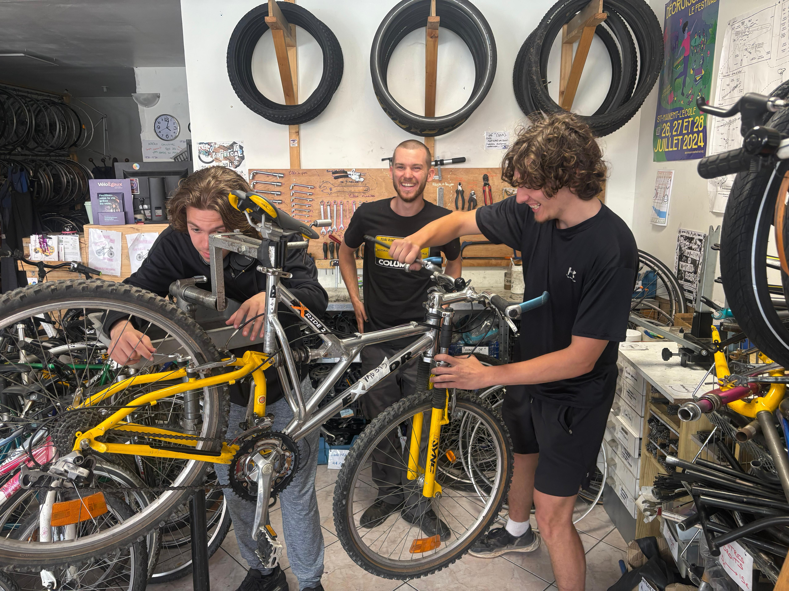
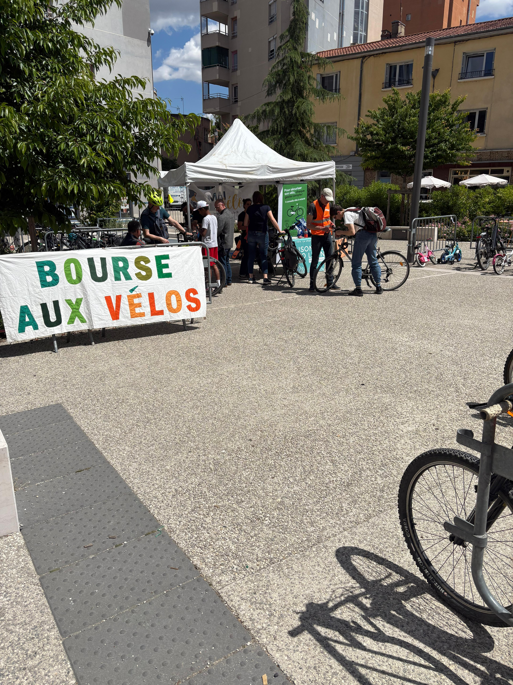
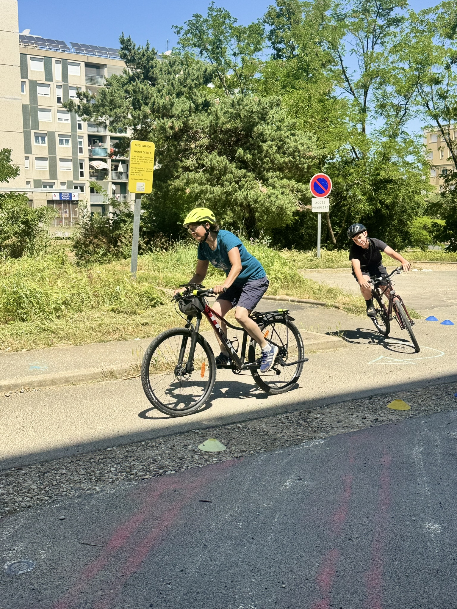
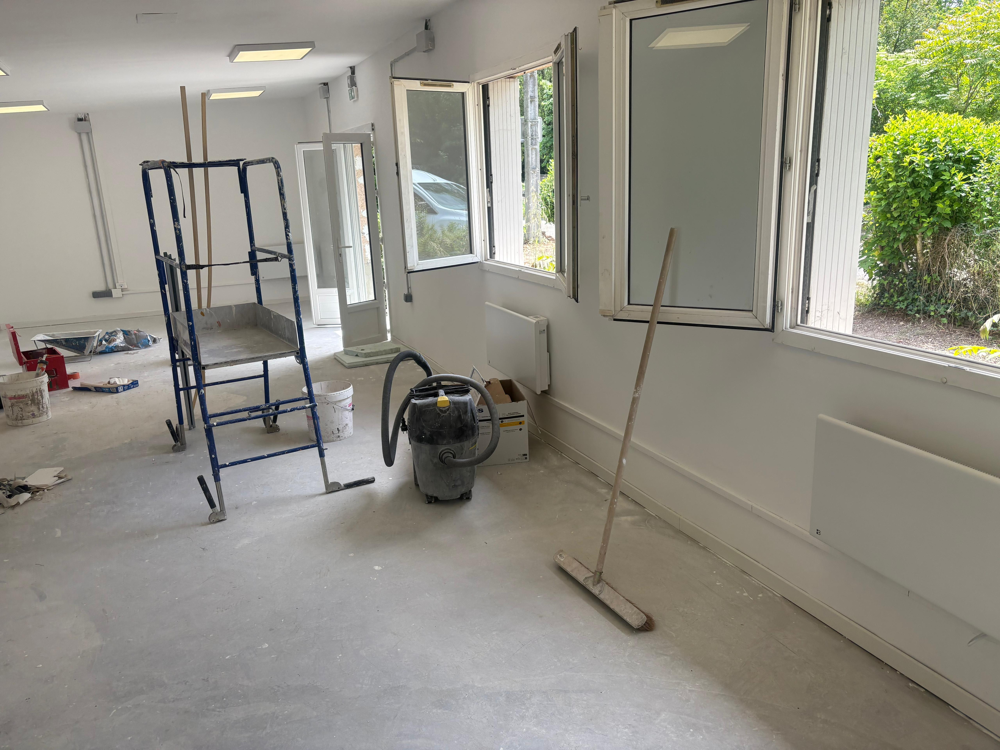
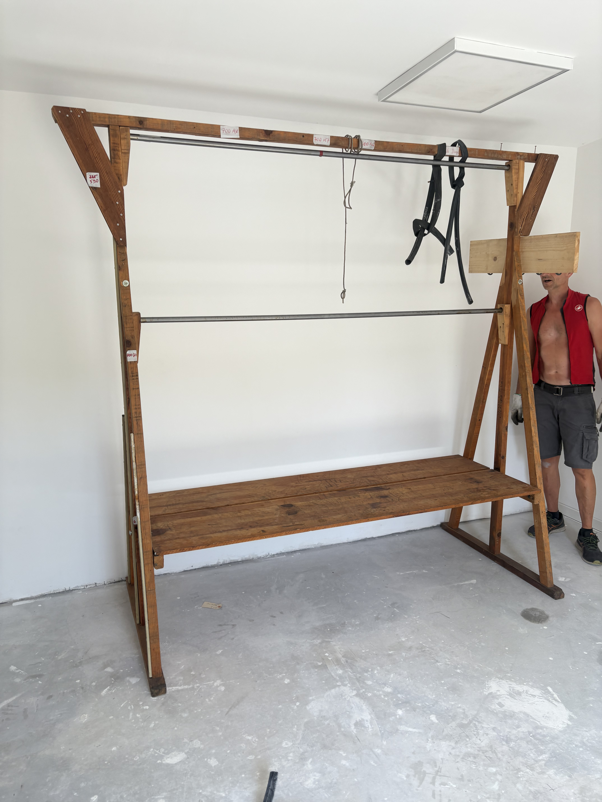
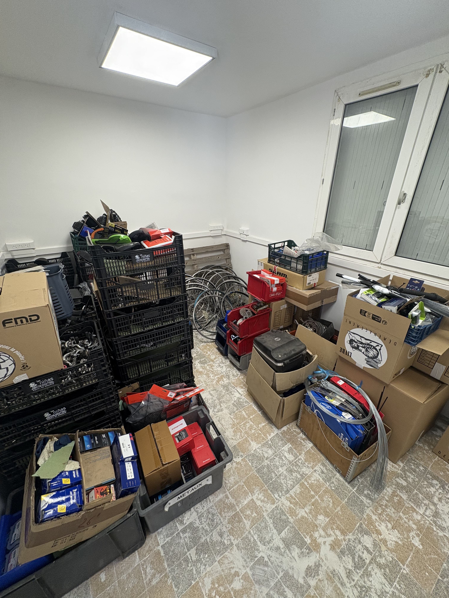

Griffin and Teague working with Janus bike mechanic Victor

Janus cycling event

Velo-Ecole event

Venissieux old workshop before relocation

Venissieux new workshop before relocation

Moving bike wheels to the new workshop

Setting up the wheel rack at the new workshop

Moving to new workshop

Teague